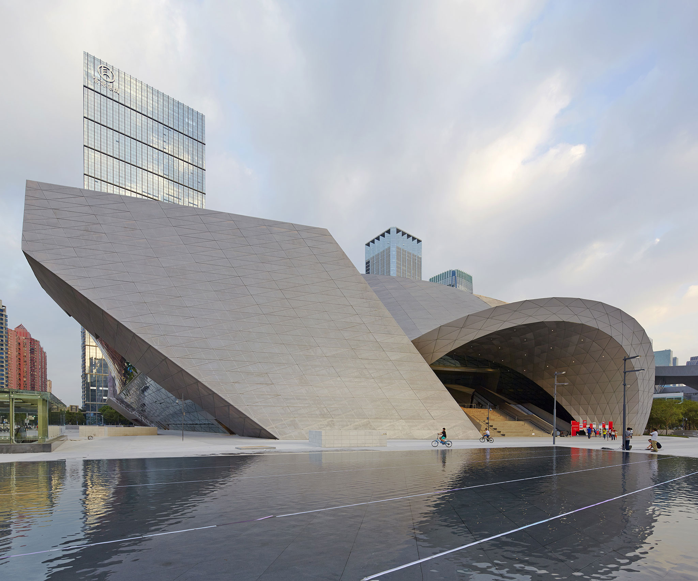
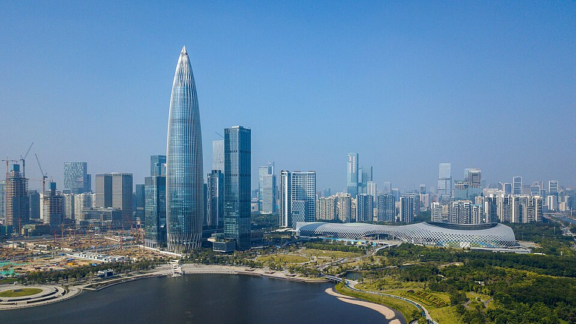

MOCAPE — Contemporary Art & Planning Museum
One of the spots listed in your reel. Go for the futuristic architecture, exhibitions, and dramatic interior/exterior photo opportunities.
Photo/source: METALOCUS · MOCAPE ShenzhenA photogenic Shenzhen day built around two places from your reel, plus the bay and Nantou Ancient City.

A visual preview of each stop.
One of the spots listed in your reel. Go for the futuristic architecture, exhibitions, and dramatic interior/exterior photo opportunities.
Photo/source: METALOCUS · MOCAPE Shenzhen
Waterfront walking with Nanshan skyline views — a good outdoor contrast to the architecture and shopping stops.
Photo: Charlie fong · CC BY-SA 4.0 · source
Historic lanes mixed with cafés, shops, and creative reuse; a compact old-town-feeling break from modern Shenzhen.
Photo: GAOU 882 Lahsum · CC0 1.0 · source
Another place named in your reel. The huge red-and-white spiral bookshelf and mirrored interior make this one of the most visually distinctive stops in Shenzhen.
Photo: SFAP · source via New Atlas{kind=link}
{kind=link}